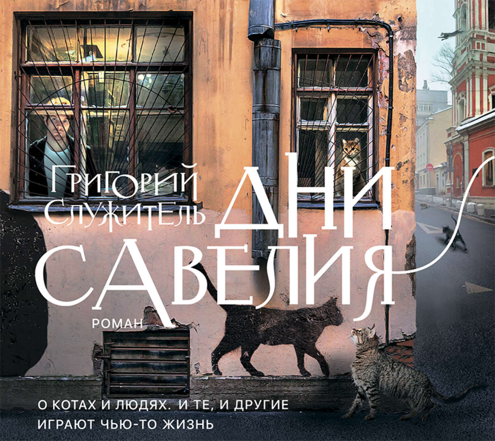

Описание
Любителям современной российской прозы. И котиков. По признанию автора, «Дни Савелия» – это «признание в любви родному городу и дань памяти дорогим для меня кошачьим существам». Роман «Дни Савелия» – о котах и людях: и те, и другие играют чью-то жизнь.
Где можно купить
Где купить?.